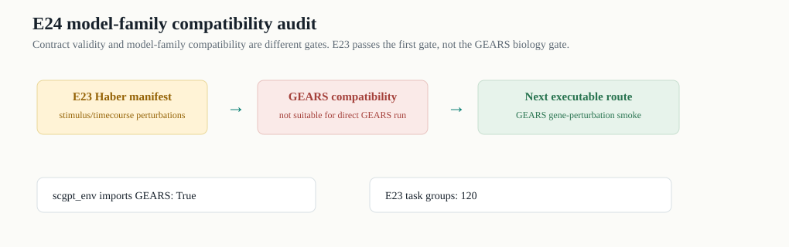

E24 model-family compatibility audit
E24 把一个容易踩坑的区别说清楚：PredictionRecord 合同过关，不代表某个模型家族可以生物学合理地运行。E23 是合同 smoke；GEARS 需要 gene-perturbation manifest。

E23 compatibility
| manifest | n_task_groups | dataset_names | perturbation_examples | gene_order_hashes | effect_definitions | gears_compatible | gears_reason | scgpt_compatible | scgpt_reason | cpa_compatible | cpa_reason |
|---|---|---|---|---|---|---|---|---|---|---|---|
| E23_HABER_200GENE_STRICT_SMOKE | 120 | Haber | Hpoly_Day10,Hpoly_Day3,Salmonella | 1 | mean_diff | False | Perturbations are Hpoly/Salmonella stimuli, not gene knockout/overexpression conditions. | adapter_possible_but_not_ready | Generic single-cell model source exists, but perturbation prediction adapter/checkpoint is absent. | conceptually_possible_for_stimulus_or_drug_but_not_ready | CPA/chemCPA assets are not locally executable; E23 stimuli are not a prepared CPA dataset. |
Perturbation class
| perturbation_class | n_task_groups |
|---|---|
| stimulus_or_timecourse | 120 |
GEARS candidate summary
| dataset_name | n_records | n_task_like_rows | n_seeds | n_perturbations | perturbation_class | mean_rmse |
|---|---|---|---|---|---|---|
| adamson | 21 | 18 | 3 | 18 | gene_perturbation_like | 0.042086 |
| dixit | 3 | 2 | 3 | 2 | gene_perturbation_like | 0.424841 |
| norman | 30 | 27 | 3 | 27 | gene_perturbation_like | 0.055878 |
Environment
| environment | path | gears_importable | scgpt_importable |
|---|---|---|---|
| default_python | /home/miniconda/bin/python3 | False | False |
| scgpt_env | $YYF_CONDA/envs/scgpt_env/bin/python | True | False |
Decisions
| decision | reason | action | priority |
|---|---|---|---|
| Do not run GEARS on E23 Haber manifest | E23 perturbations are stimulus/timecourse labels, not gene perturbations. | Keep E23 as adapter contract smoke only. | 1 |
| Use GEARS-compatible gene perturbation data for the first true model adapter | Norman/Adamson/Dixit/Frangieh local processed GEARS assets exist and scgpt_env imports gears. | Run a small GEARS strict smoke in scgpt_env, then package as E25 if runtime succeeds. | 2 |
| Do not claim scGPT validation yet | scGPT source zip exists but import is false and no perturbation checkpoint/output was found. | Unpack/install source or point PYTHONPATH; then locate checkpoint/tutorial assets. | 3 |
| Do not claim CPA/chemCPA validation yet | Only a CPA PDF trace was found locally. | Acquire executable assets or choose an accessible perturbation model. | 4 |